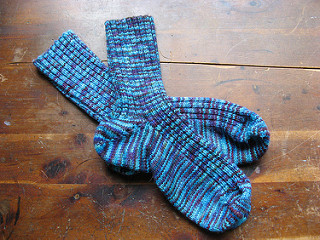

Knitting and spinning are two of my favorite hobbies.
It started in 2004 with socks. The Skull Socks of Fury
to be exact. I wanted those socks, but I decided that asking a friend to knit socks for my size 10 feet was too big of a favor, so I decided I had
to learn how to knit.
I figured that socks would be difficult to start with, so first I made scarves. Not knowing any better, I bought a kit
to make a scarf. I learned later that the kit had 2 very fad-ish and hard to work with yarns. Many Christmas scarves were made in 2004.
After scarves came hats, mittens, slippers, socks, and sweaters.

...and then came Yarn School. I was resisting learning how to spin my own yarn, because knitting was enough of a hobby.
But then, my friend Nikol announced that she was hosting Yarn School, and my good friends Adrian and Sarah, one from
the east coast and the other from the west coast were coming to teach. It was only a 2 hour drive away. I had to go.
Yarn School is in Harveyville KS at the Harveyville Project, which is owned
my friend Nikol Lohr. Students go for a long weekend of learning to spin and dye wool,
meeting like-minded people, alpacas, goats, and angora bunnies. Also the food. Nikol is a fabulous cook. The students stay in
former classrooms of the school, which still have chalkboards and posters up from when it was an elementary and high school.
After attending Yarn School, even though my first yarn was the size and weight of a baseball (very very dense), I was hooked. I've been to Yarn School more than
10 times, and I refine my technique every time. This is my first usable yarn, still on the spinning wheel.

This is my latest yarn.

I've made several sweaters out of my handspun, with more to come.


I made so many socks...

...but I never did make those socks.